Linear Regression with Correlated Predictors (Section 3.1)
Jean Morrison
January 3, 2017
Last updated: 2018-04-26
workflowr checks: (Click a bullet for more information)-
✔ R Markdown file: up-to-date
Great! Since the R Markdown file has been committed to the Git repository, you know the exact version of the code that produced these results.
-
✔ Environment: empty
Great job! The global environment was empty. Objects defined in the global environment can affect the analysis in your R Markdown file in unknown ways. For reproduciblity it’s best to always run the code in an empty environment.
-
✔ Seed:
set.seed(20180425)The command
set.seed(20180425)was run prior to running the code in the R Markdown file. Setting a seed ensures that any results that rely on randomness, e.g. subsampling or permutations, are reproducible. -
✔ Session information: recorded
Great job! Recording the operating system, R version, and package versions is critical for reproducibility.
-
Great! You are using Git for version control. Tracking code development and connecting the code version to the results is critical for reproducibility. The version displayed above was the version of the Git repository at the time these results were generated.✔ Repository version: 0309c1a
Note that you need to be careful to ensure that all relevant files for the analysis have been committed to Git prior to generating the results (you can usewflow_publishorwflow_git_commit). workflowr only checks the R Markdown file, but you know if there are other scripts or data files that it depends on. Below is the status of the Git repository when the results were generated:
Note that any generated files, e.g. HTML, png, CSS, etc., are not included in this status report because it is ok for generated content to have uncommitted changes.Ignored files: Ignored: .Rhistory Ignored: .Rproj.user/ Untracked files: Untracked: R/get_fcr.R Untracked: analysis/ci_bib.bib Untracked: data/sim.list.new.rda Untracked: temp.RData
Expand here to see past versions:
| File | Version | Author | Date | Message |
|---|---|---|---|---|
| rmd | 0309c1a | Jean Morrison | 2018-04-26 | wflow_publish(c(“analysis/biomarker_sims.rmd”, “analysis/compare_cis.rmd”, “analysis/linreg_sims.rmd”)) |
| html | a458fe5 | Jean Morrison | 2018-04-26 | Build site. |
| rmd | 6ad971f | Jean Morrison | 2018-04-26 | wflow_publish(c(“analysis/biomarker_sims.rmd”, “analysis/compare_cis.rmd”, “analysis/linreg_sims.rmd”)) |
| html | 16a0f93 | Jean Morrison | 2018-04-25 | Build site. |
| rmd | cb9059b | Jean Morrison | 2018-04-25 | wflow_publish(“analysis/linreg_sims.rmd”) |
Problem Set-up
We imagine a case similar to a genome-wide association or an expression study. For each of 100 individuals, we have measured 1000 features. In a GWAS these would be genetic variants, while in an expression study these would be the abundances of different gene transcripts. In this simulation, the 1000 features are grouped into 100 blocks, each containing 10 features. Features within a block have a pairwise correlation of \(\rho\). For this walk-through we use \(\rho=0.3\) but results are presented in the paper for \(\rho = -0.1, 0, 0.3\) and 0.8. Code for generating the full set of results can be found at the end. In each block of features, there is one feature that directly influences the outcome, \(y\). The effect sizes for these features are drawn from a normal distribution.
To illustrate the simulations, we will first generate one data set and calculate several different sets of confidence intervals for the prameters.
library(MASS)
library(ggplot2)
library(rcc)
library(rccSims)
library(gridExtra)
library(parallel)
library(ashr)
set.seed(1e7)
n.samp <- 100
n.block <- 100
#Covariance matrix for each block of features
s <- matrix(0.3, nrow=10, ncol=10)
diag(s) <- 1
#Effect sizes for each feature
beta <- list()
for(i in seq(n.block)){
beta[[i]] <- rep(0, 10)
beta[[i]][5] <- rnorm(n=1)
}
#Generate correlated features
xs <- lapply(1:n.block, FUN=function(k){
nk <- length(beta[[k]])
mvrnorm(n=n.samp, mu = rep(0, nk), Sigma = s)
})
X <- do.call(cbind, xs)
#Generate outcome
y <- X%*% unlist(beta) + rnorm(n=n.samp, sd=1)Parameter estimation
For each feature, we estimate the marginal association between the feature and the outcome using linear regression. For convenience (and improved efficiency) we use the many_lr function in the rccSims package which is a convenience utility for running many single variable linear regressions.
f_marg <- rccSims:::many_lr(y,X)
head(f_marg) beta_hat se_hat
1 0.8969749 0.9775843
2 -0.2651403 0.9404450
3 0.4854244 0.9898717
4 0.3684987 1.0274091
5 0.6158628 0.9571941
6 0.8207306 0.9952321We can also calculate the true marginal association for each feature:
truth <- c()
for(k in 1:n.block){
truth <- c(truth, s%*%beta[[k]])
}
f_marg$truth <- truth
plot(f_marg$beta, f_marg$truth, xlab="Estimate", ylab="Truth", col=rep(rep(c(1, 2, 1), c(4, 1, 5)), 10))
abline(0, 1)
Expand here to see past versions of truth-1.png:
| Version | Author | Date |
|---|---|---|
| 16a0f93 | Jean Morrison | 2018-04-25 |
Block-Based Ranking Scheme
We will use two different ranking schemes. In Section 3.1 we present results for a scheme where parameters are ranked simply on the absolute value of the test statistic. In Appendix Section 3 we discuss a ranking scheme where we first choose the most significant parameter in each block and then rank only these selected parameters.
To genmerate bootstrap confidence intervals, we will need a function that implements this block based ranking scheme:
rank_block <- function(stats, use.abs, blocks){
p <- length(stats)
b <- unique(blocks)
N <- length(b)
if(use.abs) stats <- abs(stats)
rank <- rep(NA, p)
top_ix_block <- t(sapply(b, FUN=function(blk){
ix <- which(blocks==blk)
ixmax <- which.max(stats[ix])
return(c(ix[ixmax], max(stats[ix])))
}))
o <- order(top_ix_block[,2], decreasing=TRUE)
j <- top_ix_block[order(top_ix_block[,2], decreasing=TRUE),1]
rank <- match(1:p, j)
return(list("order"=j, "rank"=rank))
}In general, par_bs_ci and nonpar_bs_ci in the rcc package can accept any ranking function that takes test statistics as the first arguement and use.abs as the second argument — use.abs indicates that ranking should be bsaed on the absolute value of the test statistic. The defualt ranking used by these functions is just the size of the (absolute) statistics. Ranking functions may accept additional arguments as well.
Here we get both the usual ranking and the block-based ranking for our parameter estimates:
blocks <- rep(1:n.block, each=10)
rnk_usual <- rcc:::basic_rank(f_marg$beta_hat/f_marg$se_hat, use.abs=TRUE)
rnk_block <- rank_block(f_marg$beta_hat/f_marg$se_hat, use.abs=TRUE, blocks=blocks)
f_marg$rank_block <- rnk_block$rank
block_ix <- which(!is.na(f_marg$rank_block))
f_marg$rank_usual <- rnk_usual$rankNaive confidince intervals
First we calculate the naive confidence intervals which don’t depend on the ranking:
ci.naive <- cbind(f_marg$beta_hat - f_marg$se_hat*qnorm(0.95), f_marg$beta_hat + f_marg$se_hat*qnorm(0.95))
sum(ci.naive[,1] <= f_marg$truth & ci.naive[,2] >= f_marg$truth, na.rm=TRUE)/1000[1] 0.876Here we plot the naive intervals vs. both ranks
plot_cis(f_marg$rank_usual, ci.naive, f_marg$truth, plot.truth = TRUE, prop=0.2) + xlab("Usual Rank") + ggtitle("Naive intervals: Usual ranking")
plot_cis(f_marg$rank_block[block_ix], ci.naive[block_ix,], f_marg$truth[block_ix], plot.truth = TRUE) + xlab("Block Rank") + ggtitle("Naive intervals: Block-based ranking")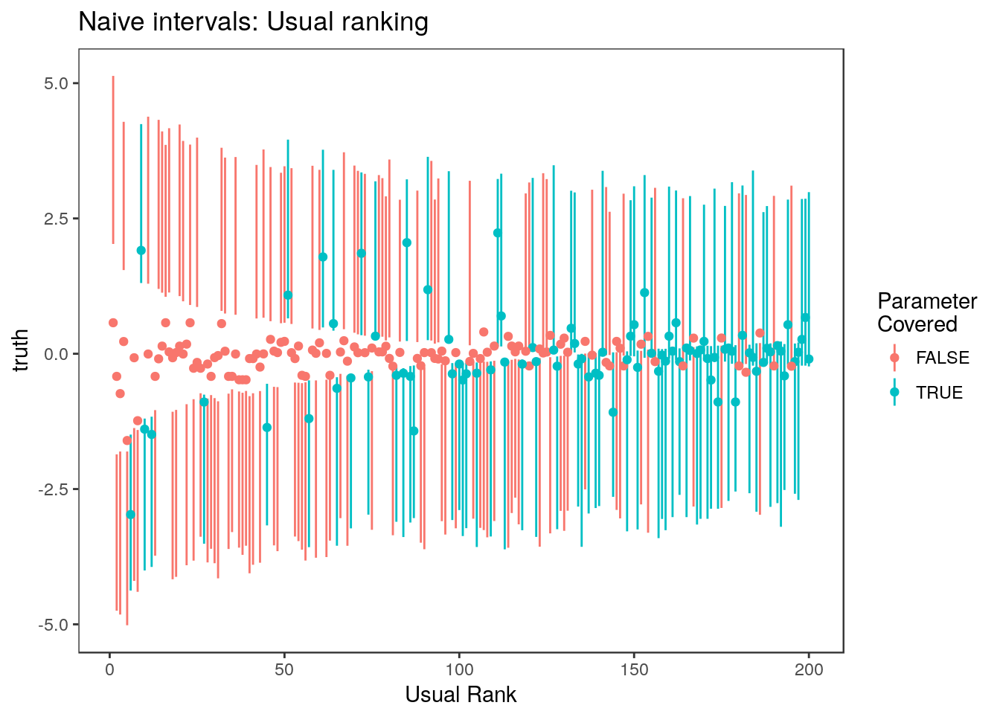
Expand here to see past versions of unnamed-chunk-2-1.png:
| Version | Author | Date |
|---|---|---|
| 16a0f93 | Jean Morrison | 2018-04-25 |
Expand here to see past versions of unnamed-chunk-2-2.png:
| Version | Author | Date |
|---|---|---|
| 16a0f93 | Jean Morrison | 2018-04-25 |
Parametric bootstrap
Next we calculate parametric bootstrap confidence intervals using the usual and block-based ranking schemes. For details on how the par_bs_ci function works, see Algorithm 2 and Appendix Algorithm 2 in the paper. You can also refer to the walk-through for section 1.5, here.
#Block-based
ci.par.block <- par_bs_ci(beta=f_marg$beta_hat, se=f_marg$se_hat,
rank.func = rank_block, blocks=blocks)[, c("ci.lower", "ci.upper")]
mean(ci.par.block[,1] <= f_marg$truth & ci.par.block[,2] >= f_marg$truth, na.rm=TRUE)[1] 0.95#Usual
ci.par.usual <- par_bs_ci(beta=f_marg$beta_hat, se=f_marg$se_hat)[, c("ci.lower", "ci.upper")]
mean(ci.par.usual[,1] <= f_marg$truth & ci.par.usual[,2] >= f_marg$truth, na.rm=TRUE)[1] 0.99plot_cis(f_marg$rank_usual, ci.par.usual, f_marg$truth, plot.truth = TRUE, prop=0.2) + xlab("Usual Rank") + ggtitle("Parametric bootstrap intervals: Usual ranking")
plot_cis(f_marg$rank_block[block_ix], ci.par.block[block_ix,], f_marg$truth[block_ix], plot.truth = TRUE) + xlab("Block Rank") + ggtitle("Parametric bootstrap intervals: Block-based ranking")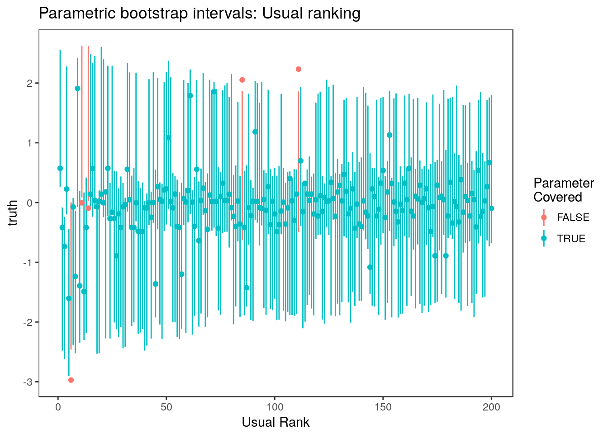
Expand here to see past versions of unnamed-chunk-3-1.png:
| Version | Author | Date |
|---|---|---|
| 16a0f93 | Jean Morrison | 2018-04-25 |
Expand here to see past versions of unnamed-chunk-3-2.png:
| Version | Author | Date |
|---|---|---|
| 16a0f93 | Jean Morrison | 2018-04-25 |
Non-parametric bootstrap
The non-parametric boostrap is described in Algorithm 3 of the paper and implemented in the nonpar_bs_ci function of the rcc package. To compute the non-parametric bootstrap confidence intervals, we must supply a function that calculates parameter estimates from data. In nonpar_bs_ci, this is the analysis.func argument.
Here is the analysis function for our problem:
lr_func <- function(data){
y <- data[,1]
X <- data[, -1]
ests <- rccSims:::many_lr(y, X, parallel=FALSE)
df <- data.frame("estimate"=ests$beta_hat, "se"=ests$se_hat, "statistic"=ests$beta_hat/ests$se_hat)
return(df)
}For nonpar_bs_ci the analysis funciton may take only one argument so we supply a data frame or matrix that has \(y\) as the first column and the features as the subsequent columns.
Here we calculate the nonparametric boostrap confidence intervals using the usual and block-based ranking schemes. The parallel argument uses the parallel package to make use of multiple cores if available.
data <- cbind(y, X)
#Usual
ci.nonpar.usual <- nonpar_bs_ci(data, analysis.func = lr_func,n.rep=1000,
level = 0.9, parallel=TRUE)[, c("ci.lower", "ci.upper")]
mean(ci.nonpar.usual[,1] <= f_marg$truth & ci.nonpar.usual[,2] >= f_marg$truth, na.rm=TRUE)[1] 0.988#Block-based
ci.nonpar.block <- nonpar_bs_ci(data, analysis.func = lr_func,n.rep=1000, rank.func = rank_block,
level = 0.9, parallel=TRUE, blocks=blocks)[, c("ci.lower", "ci.upper")]
mean(ci.nonpar.block[,1] <= f_marg$truth & ci.nonpar.block[,2] >= f_marg$truth, na.rm=TRUE)[1] 0.96plot_cis(f_marg$rank_usual, ci.nonpar.usual, f_marg$truth, plot.truth = TRUE, prop=0.2) + xlab("Usual Rank") + ggtitle("Non-parametric bootstrap intervals: Usual ranking")
plot_cis(f_marg$rank_block[block_ix], ci.nonpar.block[block_ix,], f_marg$truth[block_ix], plot.truth = TRUE) + xlab("Block Rank") + ggtitle("Non-parametric bootstrap intervals: Block-based ranking")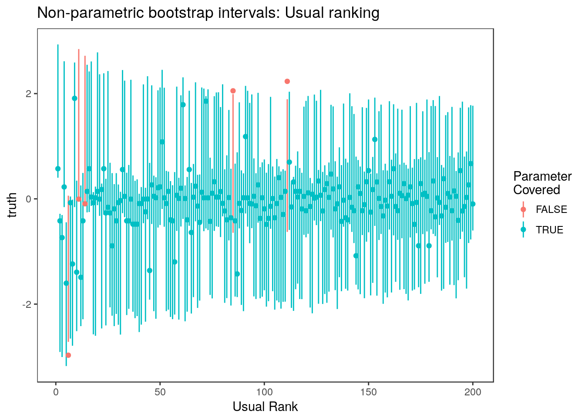
Expand here to see past versions of unnamed-chunk-4-1.png:
| Version | Author | Date |
|---|---|---|
| 16a0f93 | Jean Morrison | 2018-04-25 |
Expand here to see past versions of unnamed-chunk-4-2.png:
| Version | Author | Date |
|---|---|---|
| 16a0f93 | Jean Morrison | 2018-04-25 |
Selection adjusted intervals of Weinstein, Fithian, and Benjamini (2013) and Reid, Taylor, and Tibshirani (2014) are discussed in the walk-through for Section 1.5 and they look quite similar in this case so we will skip them here. They are included in the full simulation results below. We will show ashr credible intervals for this problem since, in this case the true parameter values are non-sparse (we are measuring the marginal effects) which leads to worse performance for ashr.
Empirical Bayes credible intervals (ashr; Stephens, 201)
Next we generate the ashr credible intervals of Stephens (2016):
ash.res <- ash(betahat = f_marg$beta_hat, sebetahat = f_marg$se_hat, mixcompdist = "normal")
ci.ash <- ashci(ash.res, level=0.9, betaindex = 1:1000, trace=FALSE)
mean(ci.ash[,1]<= f_marg$truth & ci.ash[,2] >= f_marg$truth)[1] 0.804plot_cis(f_marg$rank_usual, ci.ash, f_marg$truth, plot.truth = TRUE, prop=0.2) + xlab("Usual Rank") + ggtitle("ashr credible intervals: Usual ranking")
plot_cis(f_marg$rank_block[block_ix], ci.ash[block_ix,], f_marg$truth[block_ix], plot.truth = TRUE) + xlab("Block Rank") + ggtitle("ashr credible intervals: Block-based ranking")
Expand here to see past versions of unnamed-chunk-6-1.png:
| Version | Author | Date |
|---|---|---|
| 16a0f93 | Jean Morrison | 2018-04-25 |
Expand here to see past versions of unnamed-chunk-6-2.png:
| Version | Author | Date |
|---|---|---|
| 16a0f93 | Jean Morrison | 2018-04-25 |
Simulations in Section 3.1 and Appendix section 3
Simulation results for usual ranking are shown in Section 3.1 and for block based ranking in Appendix Section 3. All of the steps in the previous section plus the intervals of Weinstein, Fithian, and Benjamini (2013) and Reid, Taylor, and Tibshirani (2014) are implemented executed by the cluster_sim function in the rccSims package. We ran 400 simulations for each of four values of \(\rho\). Since these take a little bit longer to run than the example in Section 1.5 (since we include the non-parametric bootstrap), we ran the simulations simulataneously as individual jobs submitted to a large cluster and each job had it’s own seed. If you didn’t have access to a cluster, the following loop would generate the same results (and uses the same seeds), but we recomend running these in parallel rather than in a loop.
set.seed(5989615)
all.seeds <- floor(runif(n=400, min=1000, max=1e7))
nblock <- 100
beta <- list()
for(i in 1:nblock) beta[[i]] <- rep(c(0, rnorm(n=1), 0), c(4, 1, 5))
for(rho in c(-0.1, 0, 0.3, 0.8)){
s <- matrix(rho, nrow=10, ncol=10)
diag(s) <- 1
Sigma <- list()
for(i in 1:nblock) Sigma[[i]] <- s
for(j in 1:400){
results <- rccSims::cluster_sim(beta, Sigma, err.sd=1, n.samp=100,
n.rep=1, seed=all.seeds[j], parallel=FALSE)
save(results, file=paste0("cw_ranking", rho, "_n", j, ".RData"))
}
}All of these results are included as built-in data sets to the rccSims package in the lr_res object, so you don’t have to run them! lr_res is a list of length 4 with items corresponding to \(rho=-0.1, 0, 0.3\) and \(0.8\) respectively.
Here we plot the results for the usual ranking scheme (Section 3.1):
data("lr_res", package="rccSims")
covplots <- list()
widthplots <- list()
tpart <- paste0("=", c(-0.1, 0, 0.3, 0.8)) #For titles
for(i in 1:4){
lp <- "none"
covplots[[i]] <- plot_coverage(lr_res[[i]], proportion=0.2,
cols=c("black", "deeppink3", "red", "gold4", "forestgreen", "purple"),
simnames=paste0(c("naive", "par", "nonpar", "ash", "wfb", "selInf1"), "_basic"),
ltys= c(2, 1, 3, 6, 4, 2), span=0.5, y.range=c(-0.02, 1.02),
legend.position = lp) + theme(plot.title=element_text(hjust=0.5)) + ggtitle(bquote(rho~.(tpart[i])))
widthplots[[i]] <- plot_width(lr_res[[i]], proportion=0.2,
cols=c("black", "deeppink3", "red", "gold4", "forestgreen", "purple"),
simnames=paste0(c("naive", "par", "nonpar", "ash", "wfb", "selInf1"), "_basic"),
ltys= c(2, 1, 3, 6, 4, 2), span=0.5,
legend.position = lp)+ theme(plot.title=element_text(hjust=0.5))+ ggtitle(bquote(rho~.(tpart[i])))
}
legend <- rccSims::make_sim_legend(legend.names = c("Marginal", "Parametric\nBootstrap",
"Non-Parametric\nBootstrap", "ash", "WFB", "RTT"),
cols=c("black", "deeppink3", "red", "gold4", "forestgreen", "purple"),
ltys= c(2, 1, 3, 6, 4, 2))covplots[[1]]
widthplots[[1]]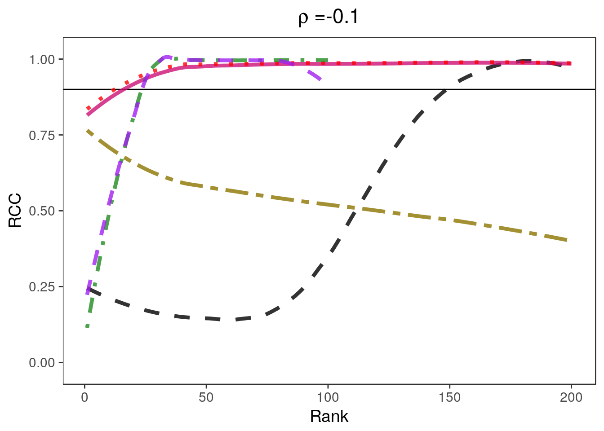
Expand here to see past versions of unnamed-chunk-9-1.png:
| Version | Author | Date |
|---|---|---|
| 16a0f93 | Jean Morrison | 2018-04-25 |
Expand here to see past versions of unnamed-chunk-9-2.png:
| Version | Author | Date |
|---|---|---|
| 16a0f93 | Jean Morrison | 2018-04-25 |
covplots[[2]]
widthplots[[2]]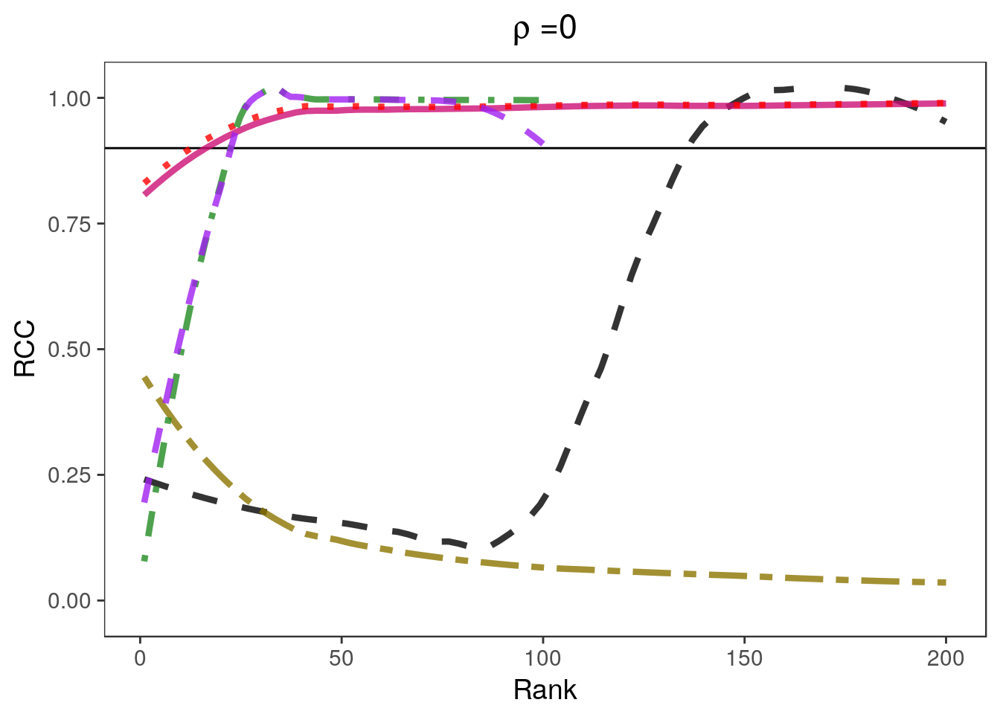
Expand here to see past versions of unnamed-chunk-10-1.png:
| Version | Author | Date |
|---|---|---|
| 16a0f93 | Jean Morrison | 2018-04-25 |
Expand here to see past versions of unnamed-chunk-10-2.png:
| Version | Author | Date |
|---|---|---|
| 16a0f93 | Jean Morrison | 2018-04-25 |
covplots[[3]]
widthplots[[3]]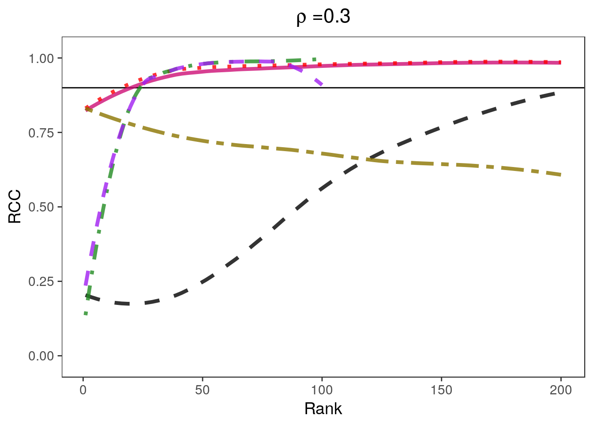
Expand here to see past versions of unnamed-chunk-11-1.png:
| Version | Author | Date |
|---|---|---|
| 16a0f93 | Jean Morrison | 2018-04-25 |
Expand here to see past versions of unnamed-chunk-11-2.png:
| Version | Author | Date |
|---|---|---|
| 16a0f93 | Jean Morrison | 2018-04-25 |
covplots[[4]]
widthplots[[4]]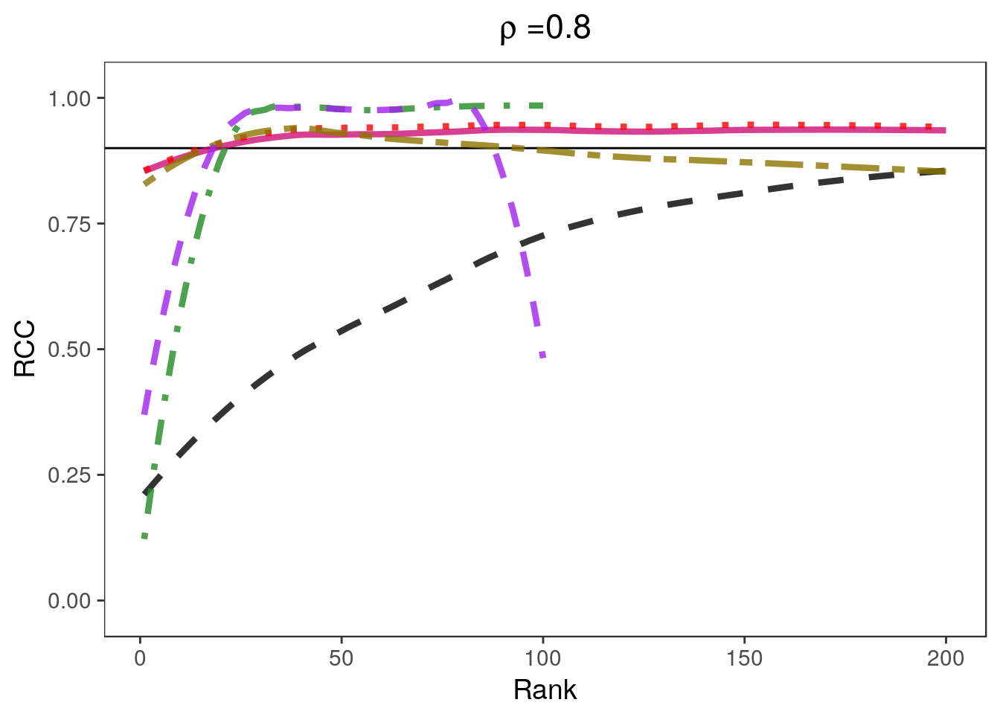
Expand here to see past versions of unnamed-chunk-12-1.png:
| Version | Author | Date |
|---|---|---|
| 16a0f93 | Jean Morrison | 2018-04-25 |
Expand here to see past versions of unnamed-chunk-12-2.png:
| Version | Author | Date |
|---|---|---|
| 16a0f93 | Jean Morrison | 2018-04-25 |
Here are plots using the block-based ranking scheme (Appendix Section 3). We don’t include the selection adjusted intervals in these plots because they only consider selection schemes based on absolute value.
covplots <- list()
widthplots <- list()
for(i in 1:4){
lp <- "none"
covplots[[i]] <- plot_coverage(lr_res[[i]], proportion=0.1,
cols=c("black", "deeppink3", "red", "gold4"),
simnames=paste0(c("naive", "par", "nonpar", "ash"), "_cw"),
ltys= c(2, 1, 3, 6), span=0.5, y.range=c(-0.02, 1.02),
legend.position = lp) + theme(plot.title=element_text(hjust=0.5)) + ggtitle(bquote(rho~.(tpart[i])))
widthplots[[i]] <- plot_width(lr_res[[i]], proportion=0.1,
cols=c("black", "deeppink3", "red", "gold4"),
simnames=paste0(c("naive", "par", "nonpar", "ash"), "_cw"),
ltys= c(2, 1, 3, 6), span=0.5,
legend.position = lp)+ theme(plot.title=element_text(hjust=0.5))+ ggtitle(bquote(rho~.(tpart[i])))
}
legend <- rccSims:::make_sim_legend(legend.names = c("Marginal", "Parametric\nBootstrap",
"Non-Parametric\nBootstrap", "ashr"),
cols=c("black", "deeppink3", "red", "gold4"),
ltys= c(2, 1, 3, 6))covplots[[1]]
widthplots[[1]]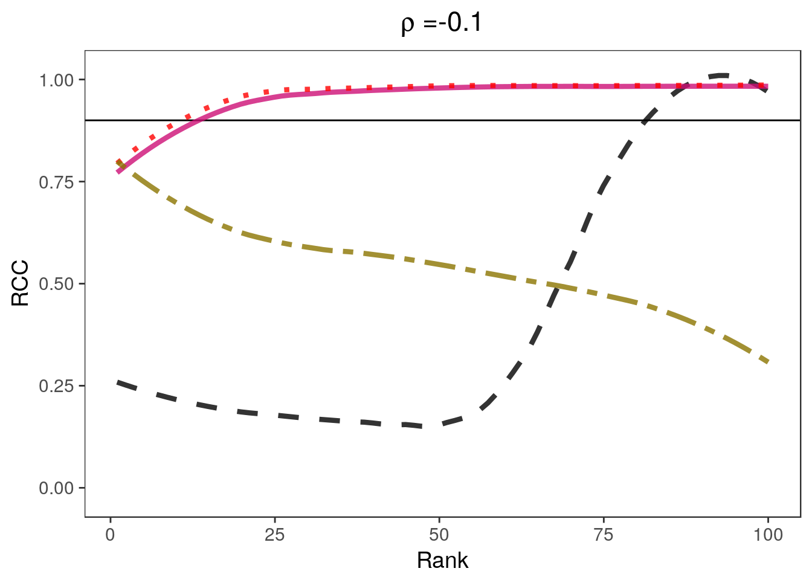
Expand here to see past versions of unnamed-chunk-15-1.png:
| Version | Author | Date |
|---|---|---|
| 16a0f93 | Jean Morrison | 2018-04-25 |

Expand here to see past versions of unnamed-chunk-15-2.png:
| Version | Author | Date |
|---|---|---|
| 16a0f93 | Jean Morrison | 2018-04-25 |
covplots[[2]]
widthplots[[2]]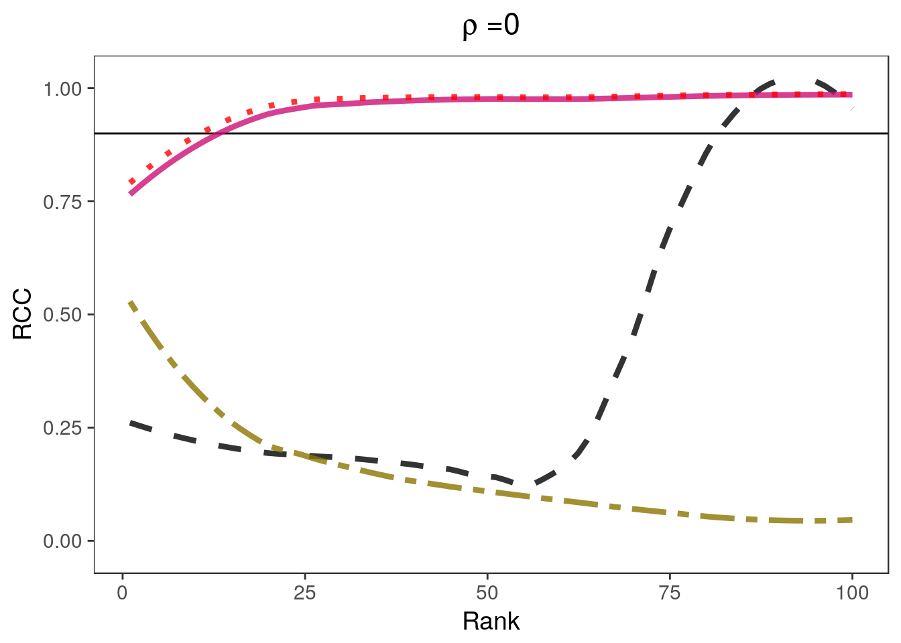
Expand here to see past versions of unnamed-chunk-16-1.png:
| Version | Author | Date |
|---|---|---|
| 16a0f93 | Jean Morrison | 2018-04-25 |
Expand here to see past versions of unnamed-chunk-16-2.png:
| Version | Author | Date |
|---|---|---|
| 16a0f93 | Jean Morrison | 2018-04-25 |
covplots[[3]]
widthplots[[3]]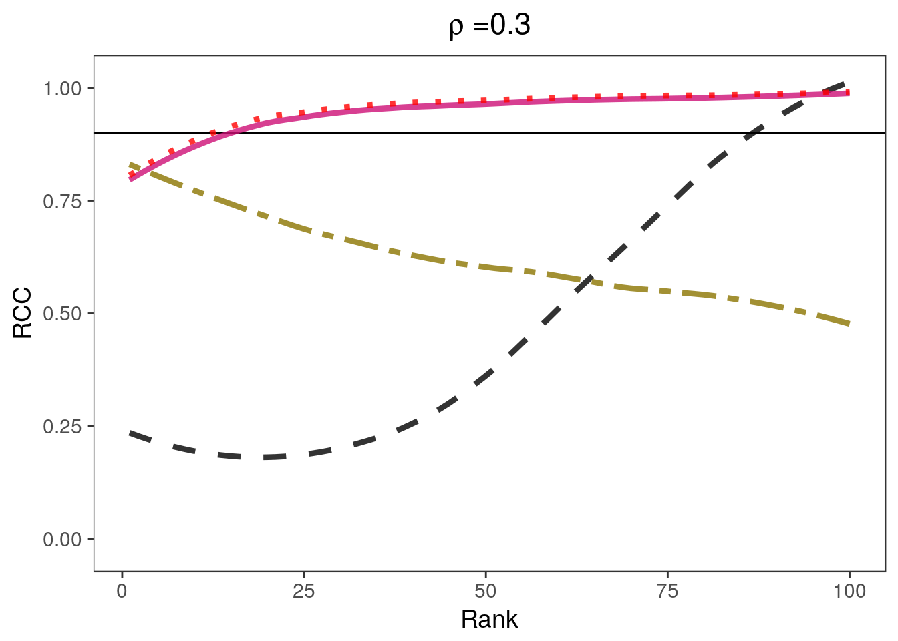
Expand here to see past versions of unnamed-chunk-17-1.png:
| Version | Author | Date |
|---|---|---|
| 16a0f93 | Jean Morrison | 2018-04-25 |
Expand here to see past versions of unnamed-chunk-17-2.png:
| Version | Author | Date |
|---|---|---|
| 16a0f93 | Jean Morrison | 2018-04-25 |
covplots[[4]]
widthplots[[4]]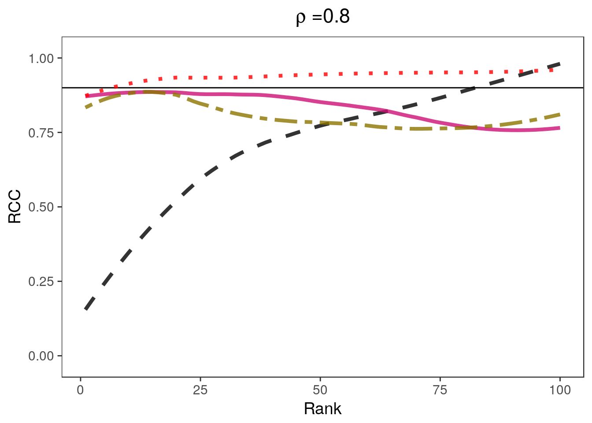
Expand here to see past versions of unnamed-chunk-18-1.png:
| Version | Author | Date |
|---|---|---|
| 16a0f93 | Jean Morrison | 2018-04-25 |
Expand here to see past versions of unnamed-chunk-18-2.png:
| Version | Author | Date |
|---|---|---|
| 16a0f93 | Jean Morrison | 2018-04-25 |
Session information
sessionInfo()R version 3.4.2 (2017-09-28)
Platform: x86_64-pc-linux-gnu (64-bit)
Running under: Ubuntu 17.10
Matrix products: default
BLAS: /usr/lib/x86_64-linux-gnu/blas/libblas.so.3.7.1
LAPACK: /usr/lib/x86_64-linux-gnu/lapack/liblapack.so.3.7.1
locale:
[1] LC_CTYPE=en_US.UTF-8 LC_NUMERIC=C
[3] LC_TIME=en_US.UTF-8 LC_COLLATE=en_US.UTF-8
[5] LC_MONETARY=en_US.UTF-8 LC_MESSAGES=en_US.UTF-8
[7] LC_PAPER=en_US.UTF-8 LC_NAME=C
[9] LC_ADDRESS=C LC_TELEPHONE=C
[11] LC_MEASUREMENT=en_US.UTF-8 LC_IDENTIFICATION=C
attached base packages:
[1] parallel stats graphics grDevices utils datasets methods
[8] base
other attached packages:
[1] ashr_2.2-7 gridExtra_2.3 rccSims_0.1.0 rcc_1.0.0 ggplot2_2.2.1
[6] MASS_7.3-47
loaded via a namespace (and not attached):
[1] Rcpp_0.12.16 compiler_3.4.2
[3] pillar_1.2.1 git2r_0.21.0
[5] plyr_1.8.4 workflowr_1.0.1
[7] R.methodsS3_1.7.1 R.utils_2.6.0
[9] iterators_1.0.9 tools_3.4.2
[11] digest_0.6.15 selectiveInference_1.2.4
[13] evaluate_0.10.1 tibble_1.4.2
[15] gtable_0.2.0 lattice_0.20-35
[17] rlang_0.2.0 Matrix_1.2-11
[19] foreach_1.4.4 yaml_2.1.18
[21] stringr_1.3.0 knitr_1.20
[23] REBayes_1.3 tidyselect_0.2.4
[25] glmnet_2.0-16 rprojroot_1.3-2
[27] grid_3.4.2 glue_1.2.0
[29] survival_2.41-3 rmarkdown_1.9
[31] purrr_0.2.4 tidyr_0.8.0
[33] magrittr_1.5 whisker_0.3-2
[35] splines_3.4.2 intervals_0.15.1
[37] backports_1.1.2 scales_0.5.0
[39] codetools_0.2-15 htmltools_0.3.6
[41] assertthat_0.2.0 colorspace_1.3-2
[43] labeling_0.3 stringi_1.1.7
[45] Rmosek_7.1.3 pscl_1.5.2
[47] lazyeval_0.2.1 munsell_0.4.3
[49] doParallel_1.0.11 truncnorm_1.0-8
[51] SQUAREM_2017.10-1 R.oo_1.21.0 Reid, Stephen, Jonathon Taylor, and Robert Tibshirani. 2014. “Post selection point and interval estimation of signal sizes in Gaussian samples.” arXiv Preprint arXiv:1405.3340, May. http://arxiv.org/abs/1405.3340.
Stephens, Matthew. 2016. “False discovery rates: a new deal.” Biostatistics, October. doi:kxw041. doi: 10.1093/biostatistics/kxw041.
Weinstein, Asaf, William Fithian, and Yoav Benjamini. 2013. “Selection Adjusted Confidence Intervals With More Power to Determine the Sign.” Journal of the American Statistical Association 108 (501). Taylor & Francis Group: 165–76. doi:10.1080/01621459.2012.737740.
This reproducible R Markdown analysis was created with workflowr 1.0.1